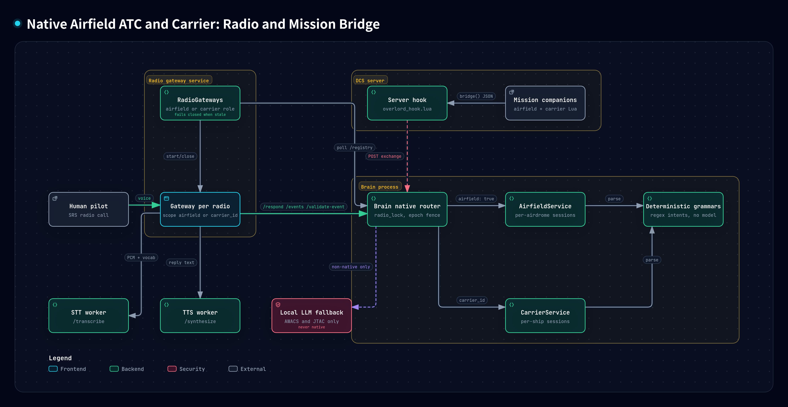

ATC and carrier diagrams
Interactive Archify views of OverlordBot's native DCS radio controllers. These explain implementation behavior, not real-world aviation procedures.
Source guide and GitHub previews · Repository
Start with the architecture, then follow the normal departure, arrival and recovery views. Exception views contain independent guarded-transition rows; repeated labels refer to the same underlying state.

Interactive views
- Native Airfield ATC and Carrier: Radio and Mission Bridge · PNG preview
- Airfield ATC Departure: Normal Procedure · PNG preview
- Airfield ATC Departure: Runway Crossing and Return to Parking · PNG preview
- Airfield ATC Departure: Clearance Revocations and Aborts · PNG preview
- Airfield ATC Departure: Early Closure and Uncleared Take-off · PNG preview
- Airfield ATC Arrival: Normal Procedure (published pattern) · PNG preview
- Airfield ATC Arrival: Straight-in, Go-around, Touch-and-go and Re-brief · PNG preview
- Airfield ATC Arrival: Grounded Samples, Landing Elsewhere, Cancellation and Handover · PNG preview
- Carrier Recovery: CASE I Normal Procedure · PNG preview
- Carrier Recovery: CASE I, II and III Pattern Calls · PNG preview
- Carrier Recovery: Bolter, Wave-off and Foul Deck · PNG preview
- Carrier Recovery: Reassignment, Stale Bridge and Closure · PNG preview
- Carrier Departure Phases (session.phase) · PNG preview
- Native Session Ownership and Isolation Safeguards · PNG preview


Every view includes source links pinned to v0.1.0 implementation revision b3f9a76. Native ATC and carrier clearances use deterministic grammars and controllers, not LLM inference.